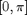

SMOOTHFILT - Isotropic or anisotropic non-linear smoothing.
Contents
Description
Perform either isotropic smoothing using a Gaussian filter with 3 possible different techniques or anisotropic non-linear hour-glass smoothing.
Syntax
S = SMOOTHFILT (I); S = SMOOTHFILT (I, rho, 'Property', propertyvalue, ... );
Inputs
I : an image with size (X,Y,C), where C>1 when I is multichannel.
rho : (optional) smoothing parameter setting the integration scale for spatial averaging of the input image; default: rho=1.
Property [propertyname propertyvalues]
'sm' : optional string setting the method used for smoothing the input; the smoothing can be either isotropic, performed in local isotropic neighbourhoods, by setting sm to:
- 'fast' for the (fast) 2D Gaussian smoothing with IMGAUSSIAN proposed by D.Kroon [Kro09],
- 'conv' or 'convolution' for the implementation of the 2D Gaussian filter using GAUSSKERNEL for defining the kernel and CONVOLUTION for filtering,
- 'matlab' or 'conv2' for a direct implementation of the 2D smoothing using FSPECIAL, CONV2 and IMFILTER,
or anisotropic, to better capture edges anisotropy, by setting it to:
- 'ani' or 'hourglass' for anisotropic Gaussian filtering along the edges as proposed by U.Koethe [Koht03] using HOURGLASSKERNEL for defining hourglass shaped Gaussian kernels and CONVOLUTION for filtering;
default: sm='fast'.
'theta' : optional (array of) matrix used by the anisotropic filter when sm='ani' is selected; it stores either the orientation (angle in ) of the filter, or the 2D vector field from which this orientation will be estimated.
'hsize' : size of the window of the filtering kernel; default: hsize is estimated depending on rho.
'samp' : if the gradients are interpolated gradients to avoid aliasing, the filters need to be adapted using this sampling factor; default: samp=1.
'thez', 'sigt' : parameters used by the anisotropic filtering with hourglass filters (see HOURGLASSKERNEL); thez is the number of discretized directions, sigt is the variance in angular direction; default: thez=8, sigt=.4.
Output
S : smoothed version of the input image I, with same dimension.
References
[GW02] R.C. Gonzales and R.E. Woods: "Digital Image Processing", Prentice Hall, 2002.
[Kro09] D.J. Kroon: "Numerical optimization of kernel based image derivatives", University of Twente, 2009. http://www.mendeley.com/research/numerical-optimization-kernel-based-image-derivatives/
See also
Ressembles: CONVOLUTION, HOURGLASSKERNEL, GAUSSKERNEL, DIRGAUSSKERNEL, DERIVATIVES, IMGAUSSIAN, FSPECIAL, IMFILTER, CONV2. Requires: SMOOTHFILT_BASE.
Function implementation
function S = smoothfilt (I,varargin)
parsing and checking parameters
error(nargchk(1, 22, nargin, 'struct')); error(nargoutchk(1,1, nargout, 'struct')); if ~(isnumeric(I)) error('smoothfilt:inputerror','matrices are required in input'); end p = createParser('SMOOTHFILT'); % optional parameters p.addOptional('rho',1., @(x)x>=0); p.addParamValue('sm', 'fast', @(x) ischar(x) && ... any(strcmpi(x,{'fast','imgaussian', 'matlab','conv2',... 'conv','convolution', 'ani','hourglass'}))); p.addParamValue('hsize',[], @(x)isscalar(x) || isempty(x)); p.addParamValue('samp',1, @(x)isscalar(x) && round(x)==x && x>=1); p.addParamValue('thez', 8, @(x)isscalar(x) && round(x)==x); p.addParamValue('sigt', .4, @(x)isscalar(x) && isfloat(x) && x>0); p.addParamValue('theta', [], @(x)isnumeric(x) && ndims(x)>=2); % parse and validate all input arguments p.parse(varargin{:}); p = getvarParser(p);
checking parameters and setting variable
C = size(I,3); if any(strcmp(p.sm,{'ani','hourglass'})) if isempty(p.theta) error('smoothfilt:errorinput',... ['input fields must be provided with option ' p.sm]); elseif ndims(p.theta)==2 && (any(p.theta(:)<0) || any(p.theta(:)>pi)) p.theta = mod(p.theta,pi); elseif ndims(p.theta)==3 p.theta = mod(atan2(p.theta(:,:,2),p.theta(:,:,1)),pi); end if ~(size(p.theta,1)==size(I,1) && size(p.theta,2)==size(I,2)) error('smoothfilt:errorinput',... 'input directional field and image must have same size'); end end
linear or nonlinear spatial smoothing
S = smoothfilt_base(I, p.rho, p.sm, p.hsize, p.samp, p.thez, p.sigt, p.theta);
display
if p.disp figure, imagesc(rescale(S,0,1)), axis image off, title('smoothed image'); if C==1, colormap gray; end; end
end % end of smoothfilt